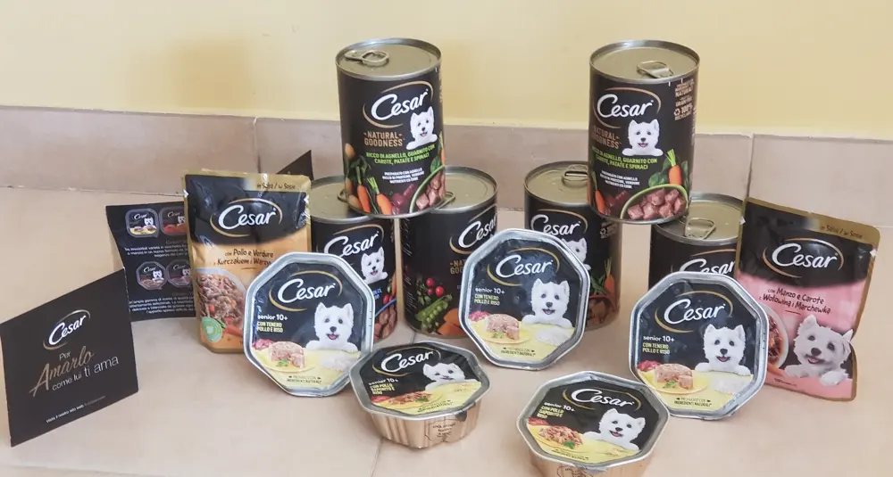
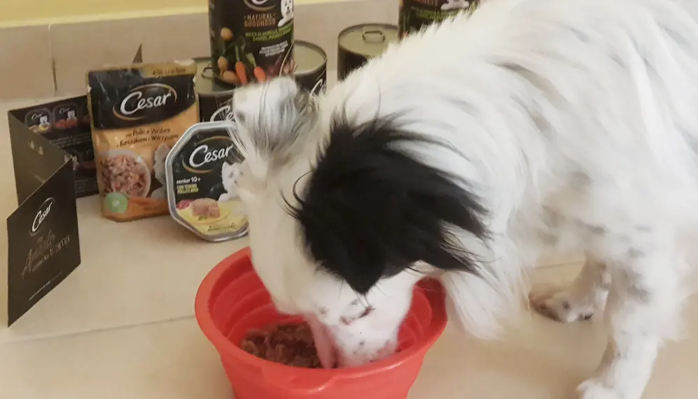
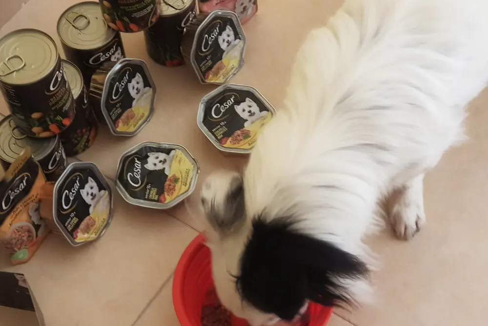
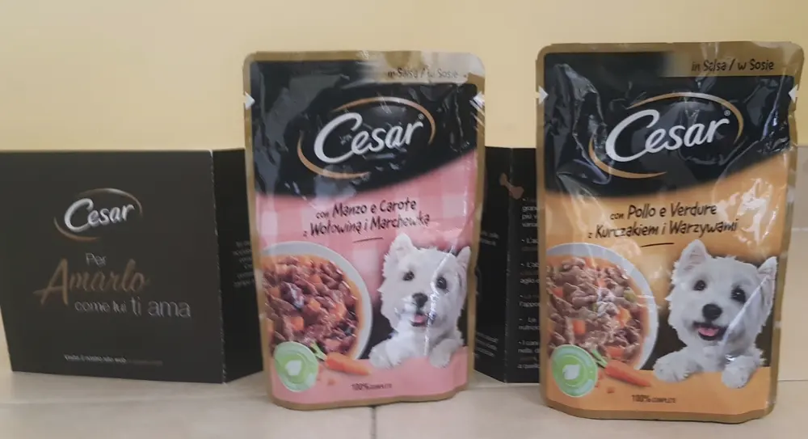
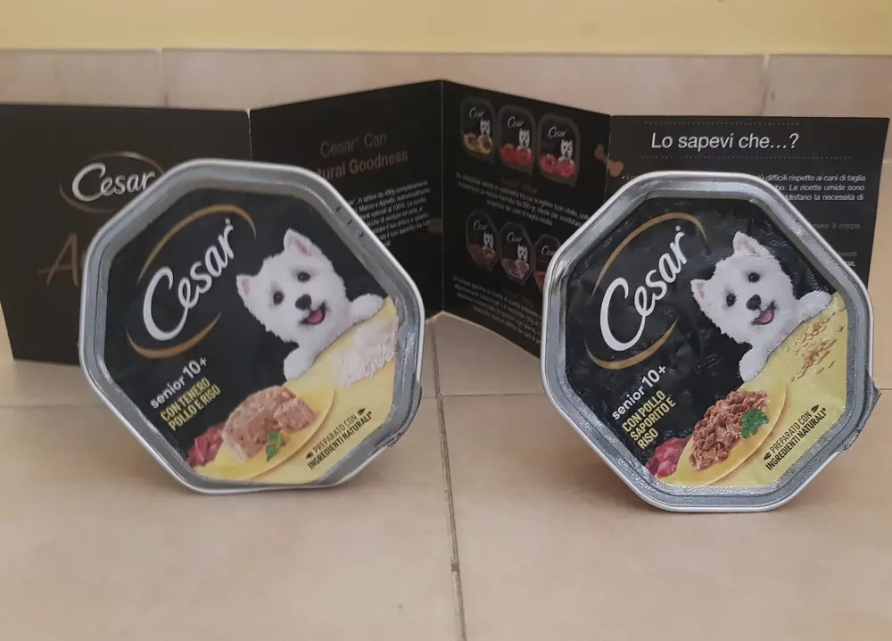
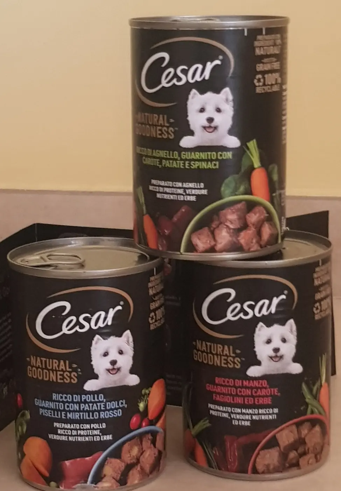
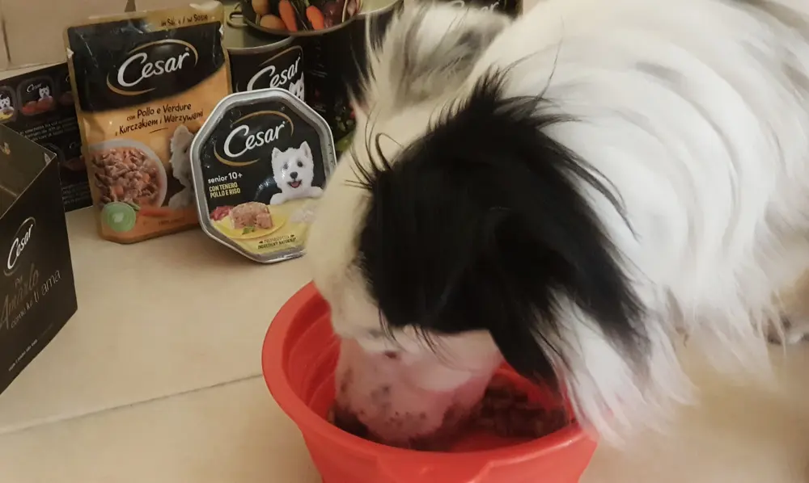

Cesar cibo per cani

Grazie a the insiders Italia il mio cucciolo è stato scelto per testare i prodotti cesar.

Ovviamente non sono qui a dirvi le sua felicità nell'assaggiare i deliziosi pranzetti forniti da Cesar.
Appena arrivati subito gli ho fatto provare un barattolo e, come potete vedere dalle foto voi stessi, Kiko non riusciva nemmeno ad alzare la testa dalla goduria.


Ma entriamo nel dettaglio di questa campagna, Cesar ha ideato questa linea per i nostri amici a 4 zampe con diversi ingredienti, proprio per offrire ogni giorno un pasto differente ma che desse comunque le vitamine, proteine e altri valori energetici adatti al nostro cucciolo.
Infatti, è possibile scegliere diverse ricette: bocconcini, filettini e paté.
Tutto diviso tra vaschette e buste.
Inoltre, Cesar ha pensato anche alle varie taglie dei cani, tra small, senior e junior.
Kiko ha già assaggiato
☆ vaschetta pollo saporito e riso
☆ pollo e verdure
☆ manzo e carote


Insomma, non si è fatto mancare niente e devo dire che tutte le volte ha gradito pienamente il pasto.
Come me ne sono accorta?

Ehm, Kiko ogni volta che gradisce digerisce con un soave ruttino :D
Più chiaro di così!
E voi avete mai provato i pasti Cesar?
Come l'avete trovsti?
Io credo che non mancherà modo che li acquisterò, sopratutto proprio per la varietà di ricette che offre.

Grazie Cesar, Kiko ha gradito appieno il tuo gesto.